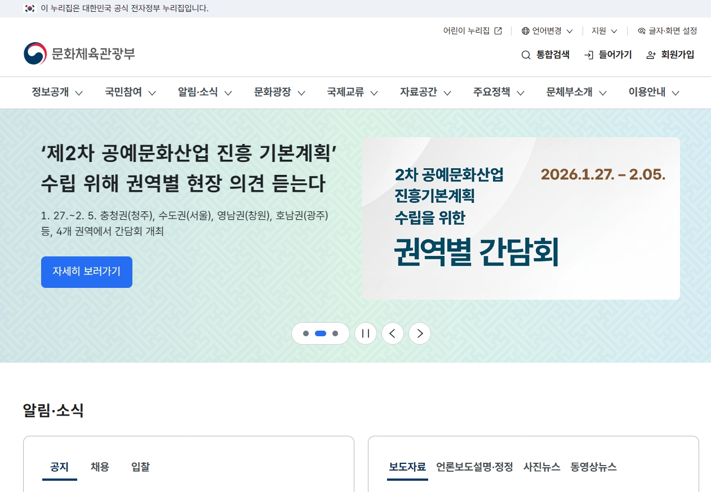

UI/UX 컨설팅 실적
디지털정부 UI/UX 기준으로 서비스 기획, IA, UI 설계, 프로토타이핑 및 사용자 테스트를 포함한 UI/UX 컨설팅 사례입니다.
디지털정부 UI/UX 및 사용자 경험 개선을 위한 체계적인 프로세스로 프로젝트를 수행했습니다.
UI/UX 컨설팅 포트폴리오
주요실적





사용자 중심의 직관적이고 효율적인 인터페이스 설계 실적
디지털정부 UI/UX 기준으로 서비스 기획, IA, UI 설계, 프로토타이핑 및 사용자 테스트를 포함한 UI/UX 컨설팅 사례입니다.
디지털정부 UI/UX 및 사용자 경험 개선을 위한 체계적인 프로세스로 프로젝트를 수행했습니다.
주요실적